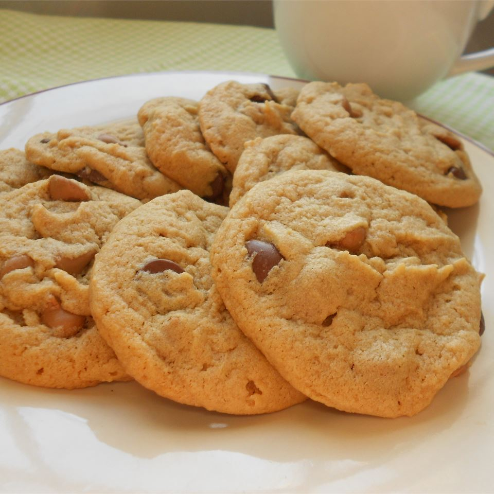

Chocolate Chip Peanut Butter Cookies

World's best peanut butter chocolate chip cookies. Grandma's favorite recipe
Ingredients
- 1 cup margarine, softened
- 1 cup peanut butter
- 1 cup white sugar
- 1 cup brown sugar
- 2 eggs
- 2 cups unbleached all purpose flour
- 1 teaspoon baking soda
- 2 cups semisweet chocolate chips
Cooking instructions
- Preheat oven to 325 degrees F (165 degrees C)
- In a large bowl, mix margarine, peanut butter, white sugar, and brown sugar till smooth
- Beat eggs separately, add into large bowl
- stir in baking soda
- slowly stir in flour
- mix in chocolate chips
- drop spoonfuls onto ungreased cookie sheets
- Bake for 12-15 minutes or until lightly browned at the edges
- Allow cookies to cool before removing from cookie sheets